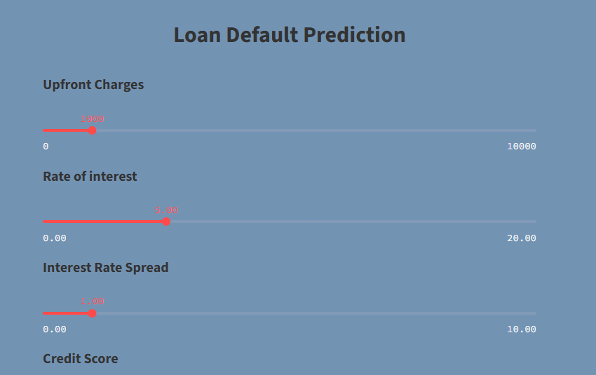

üíº Loan Default Classification Project
In this project, I tackled the critical problem of predicting whether a loan applicant is likely to default, using a real-world dataset from Kaggle. The objective was to build a robust classification model and deploy it as an interactive web application for real-time inference. Below is an in-depth breakdown of the entire workflow:
üìä Exploratory Data Analysis (EDA)
- Visualizing distributions of numerical and categorical variables.
- Analyzing correlations between features.
- Identifying potential predictors of loan default.
- Detecting and handling outliers and missing values.
These insights guided feature engineering and model development decisions.
üߺ Data Preprocessing & Cleaning
- Handling missing and inconsistent values.
- Encoding categorical variables using label encoding and one-hot encoding.
- Feature scaling and normalization where appropriate.
- Balancing the dataset to address class imbalance, improving model fairness and accuracy.
ü§ñ Model Development & Evaluation
- Experimented with Logistic Regression, Random Forest, and SVMs.
- Selected Decision Tree Classifier for interpretability and strong performance.
- Achieved 99% accuracy on the test set.
- Validated with confusion matrix and classification reports.
- Performed hyperparameter tuning to optimize performance.
üåê Web Application with Streamlit
- Interactive interface for user input of borrower details.
- Real-time predictions on loan default probability.
- Simple explanations of model decisions.
- Clean, responsive UI for practical demonstration.
This project showcases my end-to-end data science workflow—from data exploration and model building to deployment. It reflects my ability to translate data-driven solutions into real-world applications using both machine learning and web technologies.
- GitHub: View Repository
- Live Demo: View Website